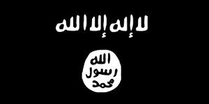
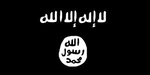
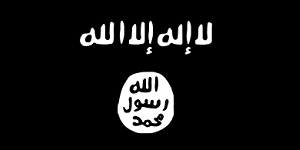

Please select of the sub-sections below:
Introduction of Tahrir Al Shams organization
Tahrir Al Shams is one of the most capable al-Qa‘ida-affiliated groups operating in Syria during the ongoing conflict. The group in January 2012 announced its intention to overthrow Syrian President Bashar al-Asad’s regime, and since then has mounted hundreds of insurgent-style and suicide attacks against regime and security service targets across the country. The group is committed not only to ousting the regime, but also seeks to expand its reach regionally and globally. Initially, al-Nusrah Front did not publicize its links to al-Qa‘ida in Iraq or Pakistan.
The Islamic State of Iraq and the Levant (ISIL) played a significant role in founding the group. ISIL predecessor organizations used Syria as a facilitation hub and transformed this facilitation and logistics network into an organization capable of conducting sophisticated explosives and firearms attacks. ISIL leaders since the beginning of al-Nusrah Front’s participation in the conflict provided their facilitation hub with personnel and resources, including money and weapons.
During 2013, al-Nusrah Front and ISIL were consumed by a public rift stemming from ISIL leader Abu Bakr al-Baghdadi’s April 2013 statement announcing the creation of ISIL and claiming the merger of both groups. Al-Nusrah Front and ISIL have strategies for Syria, and a public merger between them probably would have undermined al-Nusrah Front’s autonomy in the country. In April 2013, al-Nusrah Front’s leader, Abu Muhammad al-Jawlani, pledged allegiance to al-Qa‘ida leader Ayman al-Zawahiri.
During early 2014, the rift between al-Nusrah Front and ISIL—in which ISIL has openly accused al-Qa‘ida senior leaders of deviating from what it perceives as the correct militant path—has taken place not just on the ground but in social media as well. Al-Nusrah Front’s leaders probably have learned lessons from members’ previous experiences in Iraq and have sought to win over the Syrian populace by providing parts of the country with humanitarian assistance and basic civil services. Several Syria-based armed opposition groups cooperate and fight alongside Sunni extremist groups, including al-Nusrah Front, and are dependent upon them for expertise, training, and weapons. Al-Nusrah Front has managed to seize territory, including military bases and infrastructure in northern Syria.
The group’s cadre is predominately composed of Syrian nationals many of whom are veterans of previous conflicts, including the Iraq war. Thousands of fighters from around the world have traveled to Syria since early 2012 to support oppositionist groups, and some fighters aspire to connect with al-Nusrah Front and other extremist groups. Several Westerners have joined al-Nusrah Front, including a few who have died in suicide operations. Western government officials have raised concerns that capable individuals with extremist contacts and battlefield experience could return to their home countries to commit violent acts. An al-Nusrah Front attack in May 2014—the first known suicide bombing by an American in Syria—targeted regime personnel, highlighting the involvement of US persons in the conflict.
Mapping of the Tweet Mentions
Below is a geographical representation of the Tweets mentioning specific locations.
Mapping of the Telegram Network
TO BE FINALIZED
Mapping of the Organization Attacks
I also want to insert the map in sketch 2.js.
Even better, I would want the script to change the parameter from 'tweets' to "number event".
